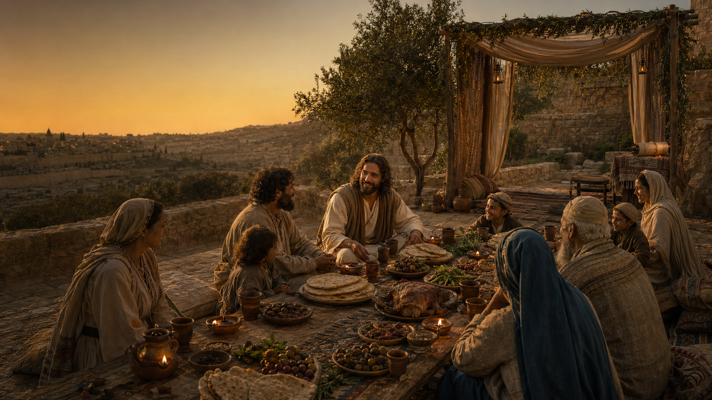

YHWH's Misfits
A virtual qahal gathering for those called to the remnant; where all things are tested through Scripture. We examine prophecy, the canon, and extra-biblical witnesses including 1 Enoch, Jubilees, and 2 Esdras, weighing truth with discernment and covenant understanding.
This is a place to be equipped; where Torah, patriarchal order, and biblical family hierarchy are restored as living practice, not theory. We do not merely build individuals; we establish households of refuge where the desolate are restored, the abandoned are gathered, and the purpose of YHWH is made visible in the earth.
For those seeking clarity, structure, and readiness for what is coming; this is your assembly.